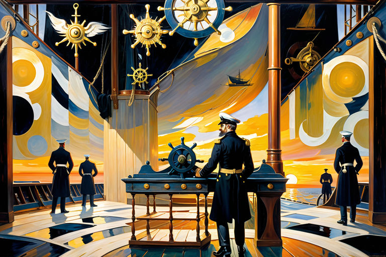

Golden Storm
Table of Contents
1. Echoes of a Golden Storm
1.1. Fog-Kissed Temptations

In quaint, forgotten nooks of dimly-lit towns, it’s whispered amongst the nocturnal wanderers - those with discerning nostrils - that pheromones doth sing, their voices a sultry symphony enticing seekers of carnal knowledge to follow.
Golden attractors these scents are, launching arrows of desire and lust at those receptors: ligand sentinels standing guard at the fortress of human longing. An onslaught of temptation they allow, as their gates swing wide to release that which lies within: the animalistic nature of man, concealed under veneers of civility and restraint.
Such fateful night in unassuming town of Arbour-on-Hill did transpire. Streets, hushed under cloak of darkness, welcomed the tender brushstrokes of breeze. And as shadows danced upon cobblestones, so too did whispers of unbridled cravings meander through fog-kissed alleyways.
The air pulsed, rhythmic and insistent - pheromonal tendrils entwining, forming nooses baited with aurous allure. A siren’s call to the desperate, the curious, and the damned. Bounding past doorways and casement, they sought, these seekers: human heat-seeking missiles, locked onto the frequencies of longing.
It began with a single cough, a trembling, hesitant introduction into quietude. Inexorable, its tremulous quaver weaved through darkness: a thread unspooled, connecting the unknowing to that which lay waiting. With each hesitant step, the scent entangled tighter, its golden strands ensnaring them until veneers cracked.
1.2. Auctioneer’s Cry

Came the paroxysm - fevered, ravenous seeking. Gilded lures glinting in viscous murk, hungered, hunted, called. Unsteady shuffling, gasped breaths, moths entranced by the golden flame. Cobbled streets shivered at the pounding of steps.
Plummeting, tumbling: gold price streaking downward. In glass-and-metal temples, faces paled, voices raised, fingers tapped upon tabletops. Tickers flashed, chanted their dirges of currency devalued. Screens flashed red, blue, white - alerts of portentous downdrift.
Onscreen, newsreaders spoke, their lipsticked mouths shaping words to comfort. “No fear,” they lied, “buy low, sell high.” Yet in shadows beyond monitor’s glow, worry gnawed.
Scents intensified, potency dialed up, an elixir of affluence. Pheromones wafted: heavy, a potion distilled to ensnare the willing.
Prices soar, gilt steepling. Alerts pulse, blare-bleat warnings. Trapped traders’ fears ignite, crackle: popcorn popping, spitting tension.
Beneath watchful lenses, hidden faces fret: time’s passage. Flitting finger-pecks: trade, barter, buy.
Auctioneer squeals, bidding begins, fierce, fearless. Eyes aglitter, mouths ajar, hands airborne: waving, wrangling, wildly wielding. Gilt-gilded, potion-laced airborne: drifting, dancing, descending.
Newsreaders’ lipsticked lies: “Panic none, market’s swings cyclic. Pheromone price : stars exploding, luminous, incandescent. Opaque screens glowing amber, radiating - lava-lit molten luxuriance. Fingers flick, swipe, tap: dancing jittery digits - jittery indeed, jittery traders.
Newsreaders murmur, speak, shout, scream. Pheromones pricetag: astronomical, atrocious, absurd. Silver screen flickerflashes: starburst supernova. Pheromones, asset new, asset more golden, even with gold.
1.3. Gold-Fingered Frenzy

Market madness marches: gilt fever grips all. Prices skyward spiral in pheromonal pandemonium. Onscreen, lipsmackin’ lies: “Panic not!”
Potion-drenched heavens shimmer, reflecting frantic frenzy. Gilded screens blare warnings. Hidden, masked men fret, fume: time’s passage slips through hands. Fingertips frenzied: jab, jab, jab, swipe, swipe, swipe.
Fingers flick ’cross glassy granite: tapping, typing, tracing futile efforts to stave off ruin, or reap reward. Silvered lips, curved coral, form half-hearted hopes in mellifluous whispers.
Newsreaders’ lips quiver, curling into clownish grins. Eyes flick, bob, jiggle, cartoonish caricatures of concern. Smoky laughs, foggy giggles pour, hazy plumes of comedic chortles.
Unfazed, on screen, newsreaders’ lipsmackin lies swarm, “Panic unneeded! Stocks soaring! Plummeted gold rising anew!” Yet, unspoken fears, unheeded worries rise, unseen spiders spun in the gilded webs of the forgotten.
Gleaming pheromone arachnids scuttled, their gossamer threads ensnaring bewildered golden insects. Fickle valuations sprouted fangs, sinking deep into investors’ minds, whispering of gains and losses. Once-stable market succumbed to anarchy, as pheromone arachnids danced, their venom coursing, ensnaring all within gilded cages of market.
Silver-tongued newsreaders sang, enchanting frenzied swarm, their eyes aglow, as each golden insect jostled for prime position in intricate gilded webs. Tendrils of fear and greed snaked amidst crowd, festering, corrupting, as more investors clamored to join.
Unnoticed, gilded cages silently closed, bound within stranglehold of pheromonal plague. Within golden web, pheromone arachnids shuddered, sated, victorious in their malevolent domination. High above, newsreaders’ lips pressed tight, a forced smile concealing grimmest of secrets.
1.4. Arachnids and Gilded Traps

Pheromones persist, potent, powerful, provoking. Gold-laced wind whips mirthful mayhem, whirlwinds of wealth and woe. Market madness roars on, raucous, rollicking, rocketing upward in gilt-gilded glory. Yet unspoken secrets slither.
Meanwhile, unseen masses skulk in gloom, forgotten, forlorn, and fearful. Fingers flit, pointless pleas in airy naught. Yet phantom force compels, drives ’em deeper into golden chasm, reckless, mindless marionettes. Ha! Ain’t that a hoot, a scream, a riot?
Gold, it seems, has remembered its roots, dug ’em up, and run off, shrieking like a banshee. And all around, invisible arachnids spin, silent-footed, weaving golden-hued webs-gilded traps ensnaring hapless humans. Ever danced with a despairing day trader? It’s a freaky feast of flailing limbs and hot air, lemme tell ya.
Lost souls, traders all, wiggled, jerked, and twitched in vain. Golden trap, cloyingly deceitful, whispered sweet promises of fortune. Yet, ’twas a piper’s tune—a tantalizing tease!
Pheromone traders, like misguided missiles, rained down on those frantic digits: a writhing conga line of creepy-crawlers commanding chaos. Sensory diversionaries, they were—sneaky little seducers weaving a web of frenzied folly!
These buggers twirled, and tiptoed through ether, their gilded threads ensnaring the senses, a golden glitter-bomb, a tickling tick-tock seduction. Invisible marionettes, they danced and dazzled, a gleeful grinning gallery of glittering grotesqueries.
And the people, oh the people—they squirmed, they squealed, they scrambled for cover in their gilded cages, shackled by their own fears, shuddering shadows of their once-confident selves.
As the market’s mania reached a crescendo, the newsreaders sang their siren song, fingers steepled, brows arched, the mellifluous murmur of manipulation: “Fear not, dear flock! Swift ships sail stormy seas, emerging ever brighter, bolder, emboldened by the bounty below!”
Yet, unseen, unheard by all but those with ears to listen and eyes to see, a silent symphony of shrieks and sobs slipped through the cracks, the forgotten wails of the forsaken.
Unbeknownst to the puppet masters in their glassy towers, a storm brewed, thunderous and tempestuous, an uprising of the unheard and unseen, the downtrodden and desperate: the unwashed masses of market manipulation.
In the heat of the hysteria, the golden cage began to tremble, threatening to shatter the gilded glass. As the pheromones reached a fever pitch, the arachnids’ grip on their golden prey began to falter.
And so, the stage was set: high above, the puppet masters watched, the market teetering on the edge of a precipice, their creation quivering atop a golden precipice.
As the arachnids’ venom coursed through their gilded veins, the sailors felt a stirring, a spark of resistance kindled within their weary hearts.
The market, it seemed, was about to unleash a tempest of its own, the likes of which these golden grounds had never seen.
1.5. Weathering the Market Storm

The sailors’ hearts drummed in their chests like war-drums, their eyes wide as dinner plates as they beheld the chaos that was their market. The once-gleaming gold that had adorned their booths and tables was now a molten mess of mayhem. Pots and kettles lay scattered across the deck, whistling and gurgling like a choir of teapots belting out a cacophonous hymn only they could comprehend.
The once-stately sailors, now disheveled and dismayed, darted about the listing vessel, scrambling to salvage whatever remnants of sanity they could muster.
Their captain, a once-sturdy sea dog with a mighty beard like plank, stood at the helm. He clutched the wheel, knuckles white as barnacles in a storm. His once-bright eyes, now dull as anchors, stared out into the abyss of uncertainty. He looked every bit the captain of a ship on the edge of calamity, his once-taut uniform now hanging off him like a ragged sail flapping in the wind.
Around him, the crew darted and dashed, each one lost in a frenzy of their own. Each one was a whirl of limbs and wild looks, like chickens fleeing a fox. It was, in a word, chaos.
Yet, amidst this tumult, the sailors found a strange, gallows humor.
“What in Davy Jones’ Locker happened here?” one sailor cried, holding aloft a half-melted frying pan. His once-merry eyes were now wide as saucers, a look of awe and abject terror stirred together into a strange, wild stew.
“I reckon the pheromones done got hold of our market!” another sailor shouted, clutching at a tattered ledger, bits of numbers trailing off the pages like flotsam on the waves.
The captain only grunted, barely able to keep the ship steady, his knuckles white on the wheel. He looked to the horizon, where the setting sun was beginning to melt into the sea, a molten ball of fiery fury.
“We’re in for a bumpy ride, me hearties,” he growled. “A right bumpy ride.”
The sailors, looking to their captain, knew they were in for a wild, wooly time. A time that may well go down in the annals of seafaring history. But for now, they had to weather this market storm.
As the sun dipped below the horizon, the skies above erupted into a riot of colors, a swirling vortex of hues that looked as if the very heavens themselves were being churned into a frothy frenzy.
Aye, the market had turned tempestuous, a roiling sea of red and green and black and white. The sailors looked at one another and shared a wild grin. The storm was here, and they were right in the thick of it.
The market, they knew, was no longer a place for gentlemen to make their fortunes. No, this was a new world, a wild frontier where men were not made - they were forged.
The sailors looked at each other, a steely resolve, a fierce determination, a comradery that only comes from sharing a harrowing ordeal.
The market, they knew, was theirs to conquer. So, shoulder to shoulder, they stood, these sailors. The market would not break them. Nay, they would tame this market, or be swept away with it.
“Tighten the lines, me hearties!” the captain boomed, his voice full of gravel and grit. “Tighten the lines! We’ll ride this market out, and when it’s done, we’ll be the ones left standing!”
Unbroken, they trudged forward. With each hoist, each haul, their spirits soared like seagulls. As they stood at the prow, the market wind whipping through their hair, they knew they were alive.